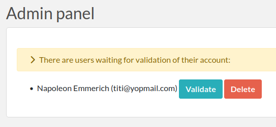

Admin guide
This guide is intended for Admins of Teams. An Admin is a User in a Team with Admin rights, and access to the Admin Panel (accessed via the top right menu or the bottom left link). A Team can have several Admins and must have at least one.
How to become an Admin?
A User is automatically an Admin if they are the first User in a Team. An Admin can promote another User to the Admin level from the Admin Panel > Users tab. A Sysadmin can promote a User to the Admin level in the same way (from the Sysadmin Panel).
General overview
An Admin:
Has access to the Admin Panel, where they can change the settings for their entire Team
Can validate/archive Users of their Team
Can edit available Categories and Status options for Experiments and Resources used by their Team
Can edit the default Experiment template
Can manage groups of Users within the Team (see below)
Can change the rightmost link in the main menu (default is Documentation)
Can archive a User, thus disabling login for that account, and locking all Experiments created by that account.
Validating accounts
Unless this setting has been modified by the Sysadmin, or provisioning is done automatically, new accounts will need to be validated by a Team Admin before new Users can connect. The Admin is responsible for validating new User accounts. To validate new Users, head to the Admin panel where you will see a list of Users waiting for validation.
If you do not wish to validate an account because that User does not belong to your Team, you can either ask the Sysadmin to change the Team associated with that account, or delete the account yourself.
TEAM tab
The first tab in the Admin Panel contains various settings for the Team. This is where you can configure what Users can or cannot do in the Team, and define a default template for Experiments or change the last link in the main menu.
GROUPS tab
The Admin can create User Groups from the Admin Panel. Once a User Group is created, the Admin can add Users to this Group by typing their names in the input field and selecting the suggested Users. Users in a Group can set the permissions of a Resource/Experiment for that Group such that only members of the Group can see/edit an entry.
Note that it is possible to add Users from other Teams to a User Group.
USERS tab
The Users tab allows you to modify User accounts in your Team. From this page, you can reset a password directly or “archive” a User. An “archived” User will no longer be able to login and all of their Experiments will be locked. If a User needs to leave one Team and join a different Team, that User should first be archived in the original Team. Then, a new account (same email) can be created for that User in the new Team. This way, the first Team keeps the data previously inputted by the User, and the User has a fresh account in the new Team using the same email address.
You can also disable multifactor authentication for a particular User, if needed.
From this page, you can also directly add a new User to your Team. The new User will need to activate the “Reset password” functionality to access their account.
CATEGORIES tab
This menu allows you to define Categories for Experiments. Categories are very similar to status options: they have a name and a color.
You can also define Categories for Resources. These are similar to Experiment templates because in addition to the name and color, you can define default text/Tags/links/fields.
You can have as many as you want. For instance:
Antibody
Cell line
Microscope (you can make it bookable so it can be accessed in the Scheduler, found in the Team tab)
Protocol (or you could use a template for this)
Computer
Software
Project
Plasmid
…
Select a Category and click “Go” to load it, or click “Create” to add a new Category.

When you create a new Category, use the default template of that type of item to add fields. For instance, for a Plasmid category you might want to have:
Concentration:
Backbone:
Resistance bacteria:
Resistance mammalian:
You can also use extra fields defined in the metadata json editor so that all items created in that Category will have these supplementary inputs.
STATUS tab
The Status options are editable and customizable. There is one set of Status options for Experiments and another one for Resources.
EXPORT tab
This tab allows you to export Experiments, items, or scheduled bookings in various formats.
TAG MANAGER tab
This interface allows an Admin to edit existing Tags. For instance, if you have Tags called “RPE1” and “RPE-1” and you want all of the Tags to be in the form “RPE-1”, find the “RPE1” Tag, click on it to edit it to “RPE-1”, and click the Deduplicate button.